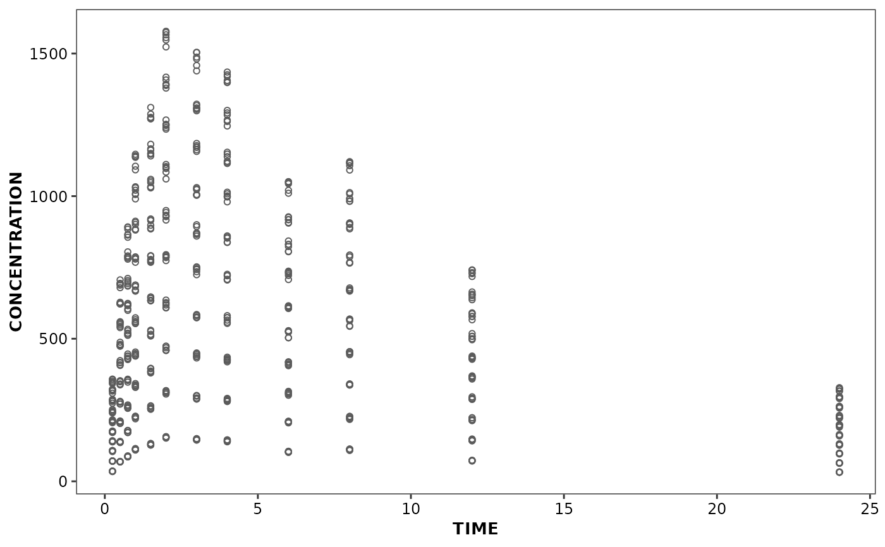

Discrete scale constructor
scale_discrete_cognigen(
n = 10,
geom = "point",
style = cognigen_style(),
grayscale = FALSE
)library(ggplot2)
# Use the xydata dataset provided in the ggcognigen package
xydata$DOSE <- as.factor(xydata$DOSE)
# scatter plot
ggplot(data = xydata) +
aes(x = TIME, y = CONCENTRATION, colour = DOSE, fill = DOSE, shape = DOSE) +
geom_point() +
scale_discrete_cognigen(n = 10, geom = 'point')
ggplot(data = xydata) +
aes(x = TIME, y = CONCENTRATION) +
geom_point() +
scale_discrete_cognigen(n = 10, geom = 'point')

ggplot(data = xydata) +
aes(x = TIME, y = CONCENTRATION, colour = DOSE, fill = DOSE, shape = DOSE) +
geom_point() +
theme_cognigen() +
scale_discrete_cognigen(style = cognigen_purple_style(), n = 10, geom = 'point')
# Lineplot
linedata <- subset(xydata, REP == 1)
ggplot(data = linedata) +
aes(x = TIME, y = CONCENTRATION, group = DOSE) +
geom_line()
# Barchart
ggplot(data = bardata) +
aes(x = STUDY, y = COUNT, fill = GROUP) +
geom_bar(stat = 'identity', position = 'stack', alpha = 1) +
scale_discrete_cognigen(n = 10, geom = 'bar')
ggplot(data = bardata) +
aes(x = STUDY, y = COUNT, fill = GROUP) +
geom_bar(stat = 'identity', position = 'stack', alpha = 1) +
theme_cognigen() +
scale_discrete_cognigen(style = cognigen_purple_style(), n = 10, geom = 'bar')
# Boxplot
ggplot(data = boxdata) +
aes(x = GROUP, y = CONTINUOUS, colour = CATEGORICAL) +
geom_boxplot2(
notch = TRUE,
coef = 90,
fill = 'white',
position = position_dodge(width = 0.9),
na.rm = TRUE
) +
theme_cognigen() +
scale_discrete_cognigen(
style = cognigen_purple_style(),
n = 10,
geom = 'boxplot'
)
ggplot(data = boxdata) +
aes(x = GROUP, y = CONTINUOUS, colour = CATEGORICAL) +
geom_boxplot2(
notch = TRUE,
coef = 90,
fill = 'white',
position = position_dodge(width = 0.9),
na.rm = TRUE
) +
theme_cognigen() +
scale_discrete_cognigen(10)